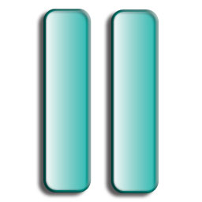
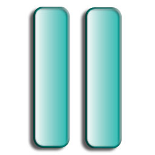

Ang AMIS ay isang software program na maaaring gamitin upang basahin ang mga DAISY Digital Talking Books. Ito ay self-voicing, ibig sabihin hindi kailangan ang espesyal na screen-reading software upang gamitin ng mga taong may kapansanan sa paningin. Ang AMIS ay malayang software at maaaring gamitin ng libre. Ang AMIS ay nilikha at sinusuportahan ng DAISY for All Project, na pinondohan ng Nippon Foundation. Ang AMIS ay maaaring gamitin sa iba't-ibang wika. Bisitahin ang aming website para sa mga kaukulang wikang salin na maaaring i-download. Ipagpatuloy ang pagbabasa upang mas mapag-aralan pa ang mga katangian ng AMIS.
Ang ibig sabihin ng DAISY ay Digital Accessible Information SYstem. Ang mga librong DAISY ay maituturing na accessible digital talking books. Ang karaniwang katangian ng mga libro, tulad ng mga bahagi, mga pahina, mga talababa, sidebars, at mga panandaan ay matatagpuan dito na nagbibigay sa mga gumagamit nito ng madaling paraan ng paglilibot. Matatagpuan ang karagdagang kaalaman tungkol sa DAISY sa http://www.daisy.org.
Ang bahaging ito ay naghahatid ng mabilisang listahan ng mga utos na makakatulong sa paggamit ng AMIS.
Pagkuha ng Tulong: Pindutin ang F1 sa anumang sandali upang makita ang Tulong na ito.
Pagsasalang ng CD-ROM: Pindutin ang Control + L upang isalang ang nilalaman ng CD-ROM.
Buksan ang talaksan mula sa hard drive: Pindutin ang Control + O upang magbukas ng talaksan.
Ilipat ang atensyon sa bintana ng paglilibot: Pindutin ang Control + N upang pumunta sa bintana ng paglilibot. Pagkatapos gamitin ang mga arrow keys upang gumalaw sa mga listahan ng mga bagay sa paglilibot.
Pagpapatugtog at Paghihinto ng libro: Pindutin ang Space.
Paglabas sa AMIS: Pindutin ang Alt + F4.
Ilipat ang atensyon sa pangunahing bitana ng texto: Pindutin ang Control + A
Taasan ang granularity ng lalim ng bahagi: Pindutin ang Control + P
Bawasan ang granularity ng lalim ng bahagi : Pindutin Control + Q
Pakinggan ang mga panuto para sa dialog: Pindutin ang Control + I.
Pakinggan ang texto na isinulat: Pindutin ang Control + T. Maari lamang gamitin kung ang dialog ay nagalalaman ng texto na nababago.
Ulitin ang muling pagdikta: Pindutin ang Control + R.
Isalang ang talaksan mula sa iyong hard drive. Ang utos na ito ay magbubukas ng isang browser para sa talaksan kung saan maaari kang pumili ng librong DAISY.
Ito ay magbubukas ng dialog kung saan isusulat ang lokasyon ng hahanapin. Ang mga resulta ay nakalista sa bintana ng dialog.
Ang listahan ng pinakabagong libro ay isang sub-menu na naglalaman ng mga pamagat ng mga pinakahuling binasang libro.
Dito maaari mong baguhin ang mga kompigurasyon tulad ng panimulang pagkilos, lokasyon ng panandaan, mga kulay na ginagamit, at kung anong wikang salin ang gagamitin (kung mayroon mang naka-install).
Ito ang default na tabing ng bintana ng dialog ng mga kagustuhan.
Ito ay isang bahagi sa dialog ng mga kagustuhan.
Ito ay isa pang bahagi ng dialog ng mga kagustuhan
Ang tanaw na ito ay may menyu, toolbar, at sidebar. Ito ay tulad ng iba pang kompyuter software. Ito ang default na tanaw ng AMIS. Maari kang magpalit mula sa dalawang klaseng tanaw payak o default gamit ang keyboard shortcut sa ibaba.
Ang tanaw na ito ay walang menyu o sidebar. Ang toolbar ay may anim na malalaking buttons sa ilalim ng tabing.
Ang sidebar, na nakalarawan sa itaas, ay may mga bagay na ginagamit sa paglilibot sa mga bahagi at mga listan ng mga bagay tulad ng mga pahina, mga talababa, at marami pang iba. Ang mga bagay na ito ay nakalista. Ang bawat isa sa mga listang ito ay may kanya kanyang bahagi.
Isang espesyal na keyboard shortcut na kailangan alalahanin ay Control + N, na naglalagay ng atensyon sa sidebar at pinapayagang libutin ang anumang kasalukuyang lista. Maaaring niyong palitan ang mga lista sa pamamagitan ng menyu ng tanaw.
Ang sidebar ay maaaring i-on o i-off. Pwede ninyong gamitin ang menyu o pindutin ang "x" sa itaas at kanang bahagi ng bintana ng sidebar.
Ang sidebar ay maaaring ilagay sa kahit anong bahagi ng tabing sa pamamagitan ng pag pindot at paghila sa kanyang title bar. Hilain sa dulo at bitawan siya sa kaliwa, kanan, itaas o ibaba.
Paalala: Ang bahaging ito ay hindi nagagamit kung ang libro ay walang mga pahina.
Mga espesyal na mga bagay tulad ng talababa, sidebars (hindi ang AMIS sidebar, kundi ang mga librong sidebar), mga tala ng producer, at iba't ibang mga bagay na naka grupo. Ito ay makikita sa sidebar ng AMIS at sa Menyu ng Tanaw kung ito ay nakalahad sa publikasyon.
Ang bagay na ito ay maaaring ma-on o ma-off sa tuwing pinipindot ang button o keyboard shortcut. Mga kumpigurasyon sa mga kulay ay maaaring piliin sa Pagtakda ng Kulay na bahagi sa dialog ng Mga Kagustuhan.
Lumalaki ang Font habang pinipindot ang button or keyboard.
I-reset ang laki ng font sa orihinal na halaga.
Habang nagpapatugtog, ang "Tugtog" ay nagiging "Hinto" at ang "Hinto" ay nagiging "Tugtog".
Ito ang nagpapabilis ng pagbabasa ngunit hindi naapektuhan ang tinis.
Ito ay nagpapabagal ng pagbabasa ngunit hindi naapektuhan ang tinis.
Niri-reset ng icon na ito ang pagbabasa sa normal na bilis.
Ang command na ito ay nagpapahintulot na limitahan o lawakan ang herarkiya ng bahagi. Sa umpisa, pag nagbukas ka ng libro, ang lahat ng mga bahagi ng nasabing libro ay makikita sa sidebar.
Ang listahan ng halaga o bilang ng lalim ng bahagi (1, 2, 3, at iba pa) ay nasa sub-menyu ng menyu ng Paglilibot.
Ang isang parirala ay maaaring isang pangungusap o talata, depende sa istilo ng produksyon ng publikasyon.
Ang isang parirala ay maaaring isang pangungusap o talata, depende sa istilo ng produksyon ng publikasyon.
Ang command ukol sa pahina ay maaari lamang gamitin kung ang isang publikasyon ay naglalaman ng mga pahina.
Ang command ukol sa pahina ay maaari lamang gamitin kung ang isang publikasyon ay naglalaman ng mga pahina.
Ang command ukol sa pahina ay maaari lamang gamitin kung ang isang publikasyon ay naglalaman ng mga pahina.
Ang command na paghahanap ng texto ay maaari lamang gamitin kung ang isang publikasyon ay naglalaman ng texto.
May ilang mga bagay, katulad ng mga kumplikadong istraktura, gaya ng talaan, o karagdagang impormasyon tulad ng sidebars, ay maaaring laktawan. Ito ay nangangahulugan na magpapatuloy ang iyong pagbabasa sa unahan ng mga bagay na ito
Ang isa sa mga katangian ng librong DAISY ay nagtataglay ito ng mga bagay na maaaring laktawan. Ang bagay na maaaring laktawan ay katangian ng libro na maaaring gamitin o tanggalin. Ang pahina at talababa ay ilan lamang sa mga halimbawa ng mga bagay na posibleng laktawan. Kung ayaw mong marinig ang mga bagay na ito habang ikaw ay nagbabasa, siguraduhing naka-marka ang mga ito sa dialog ng "Mga Bagay na Maaaring Laktawan".
Kapag nagbukas ng libro, awtomatikong naisasalang ang lahat ng panandaan na kaakibat nito. Ang mga bagong panandaan ay madadagdag sa listahang ito na nasa menyu ng Panandaan.
May tatlong klaseng kabuuang impormasyon na ipinagkakaloob ng AMIS: Buong Kabuuan, Kasalukuyang Posisyon, at Mga Pagpipilian sa Paglibot. Ang bawat isa ay magagamit bilang dialog, tinatawag ng Impormasyong menyu ("Alt + I")
Ang AMIS ay sinusuportahan ang pag-akma ng software sa pamamagitan ng add on packages, tulad ng plug-ins at wikang salin.
Ang AMIS ay sinusuportahan ang plug-ins, na maaaring alternatibong software-lamang o software at hardware interfaces. Ang mga joysticks, refreshable Braille displays, at scanning menyu ay mga halimbawa ng plug-ins. Ang lahat ng plug-ins ay maaring i-download mula sa aming website (http://amis.sf.net).
Ang AMIS ay sinusuportahan ang UNICODE at maaring ikumpigura upang gamitin ang ibat'ibang wikang salin. Ang lahat ng wikang salin ay maaring ma-download mula sa aming website (http://amis.sf.net).


 o

o
